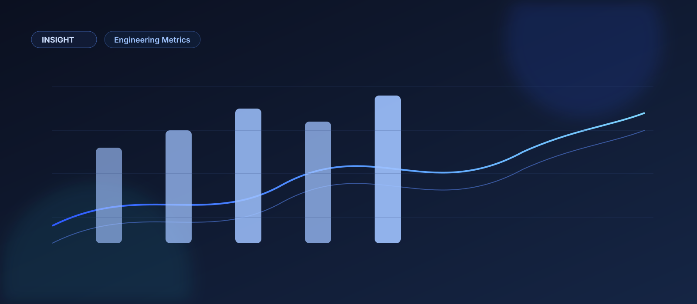

Insight
Engineering Metrics That Matter (and Which to Ignore)

A practical guide to engineering metrics that improve delivery predictability, software delivery recovery, and business outcomes.
Need this applied to your delivery system?
Bring your current metrics and bottlenecks. We will map them to a 30–90 day intervention plan with clear owners and measurable outcomes.
Introduction: why this topic matters for delivery-critical teams
Most delivery failures are systems failures, not effort failures. Teams usually have smart people and strong intent, but they operate inside unclear constraints, inconsistent priorities, and architecture debt that makes execution fragile. This guide is written for leadership teams that need practical decisions, not generic theory.
The objective is simple: improve delivery predictability and decision quality with measurable outcomes. Where useful, this guide references benchmark research and proven operating patterns used in growth-stage software environments.
If your team is currently under pressure, pair this article with the software delivery recovery pillar and relevant service pages so insight turns into action quickly.
Core concepts and failure patterns
A recurring pattern across failing software projects is decision latency. Work starts before trade-offs are explicit, then teams absorb change mid-flight. The consequence is rework, deadline drift, and quality regression.
Another pattern is metric overload with low actionability. Teams track many indicators but cannot connect movement to specific interventions. In practice, a small decision-focused set outperforms broad dashboards.
Architecture friction compounds both issues: integration bottlenecks, unstable interfaces, and operational blind spots create hidden risk that planning alone cannot fix.
Practical framework: Baseline → Intervention → Result
Baseline: establish current state with objective measures. Capture lead time distribution, blocked time ratio, replan frequency, escaped defects, and incident recovery time.
Intervention: apply targeted operating and technical changes. Typical moves include roadmap resequencing, explicit decision rights, dependency escalation pathways, quality gates, and architecture simplification in high-friction zones.
Result: track directional outcomes weekly and cumulative outcomes monthly. Good signals include reduced planning variance, lower unplanned work, fewer high-severity incidents, and improved leadership confidence in commitments.
Examples from real delivery environments
Example 1 (scale-up SaaS): release delays driven by cross-team dependency loops. Intervention was governance reset plus API boundary stabilization. Outcome was shift from quarterly releases to biweekly increments within two quarters.
Example 2 (health-tech operations): incident load consumed roadmap capacity. Intervention was reliability guardrails plus incident ownership model. Outcome was lower escalation burden and restored feature delivery confidence.
Example 3 (B2B platform): team velocity appeared healthy while strategic milestones slipped. Intervention was KPI simplification and WIP discipline. Outcome was improved strategic throughput despite lower gross ticket count.
Benchmark evidence and research citations
DORA research consistently correlates deployment frequency, lead time, change failure rate, and recovery speed with organizational performance.
GitHub Octoverse shows sustained growth in software contribution volume, increasing coordination pressure for delivery teams.
Stack Overflow developer surveys indicate rapid AI adoption, which increases the need for quality controls and observability in delivery systems.
Implementation checklist (next 30 days)
Week 1: establish baseline metrics, identify top three constraints, and align leadership decision rights.
Week 2: choose two interventions only, define ownership, and set weekly review cadence.
Week 3: measure effect, remove low-value work, and document decision logs.
Week 4: consolidate learnings into a repeatable operating playbook and define next-stage priorities.
Service pathways and next actions
Use fractional CTO consulting when technical leadership decisions are delayed or inconsistent.
Use AI integration consulting when workflow automation opportunities are measurable and operational controls are needed.
Use delivery recovery advisory when roadmap commitments are slipping and execution needs a 30–90 day reset.
Conclusion
Strong delivery outcomes come from disciplined systems, not isolated heroics. Teams that define constraints, sequence interventions, and track outcome-linked metrics regain predictability faster than teams that add more activity without structural change.
If your team needs immediate direction, begin with the delivery recovery guide and choose the most relevant service path.
Detailed operating guidance for leadership teams
Most organizations underestimate how quickly execution quality degrades when decision rights are ambiguous. Leadership teams should define technical decision categories and assign clear ownership for each category: architecture, reliability, security, data quality, and roadmap trade-offs. This does not slow delivery; it reduces avoidable rework and prevents drift.
Another recurring issue is mismatch between planning granularity and system risk. Teams plan in feature slices but execute inside tightly coupled systems. A stronger approach is risk-informed planning: identify high-coupling work early, allocate integration buffers intentionally, and monitor risk burn-down weekly. This is particularly important when customer commitments or investor milestones depend on delivery confidence.
For practical execution, leaders should run one operating review per week with a fixed structure: baseline metric movement, active blockers, risk ranking updates, and required executive decisions. Avoid broad status reporting that obscures accountability. The objective is decision acceleration, not information accumulation.
When teams adopt this cadence consistently, they typically see improved forecast reliability, faster blocker resolution, and better alignment between engineering work and commercial outcomes.
Advanced checklist and common mistakes to avoid
Checklist: define one source of truth for commitments, maintain architecture decision records, enforce release quality gates, and separate exploratory work from committed delivery streams.
Mistake 1: trying to fix everything simultaneously. Limit interventions to the highest-leverage constraints first.
Mistake 2: measuring activity instead of outcomes. Keep metrics tied to decision quality and delivery reliability.
Mistake 3: delaying risk conversations until late-stage pressure. Surface risks early with explicit mitigation owners.
Mistake 4: treating AI adoption as a substitute for delivery fundamentals. Use AI integration consulting only after workflow ownership and quality controls are clear.
Mistake 5: skipping technical due diligence on strategic bets. Hidden technical liabilities can erase commercial upside if not assessed before commitment.
Action plan: what to do next
If your team is currently missing commitments, begin with the software delivery recovery pillar and choose one focused intervention this week. If decision latency is the core blocker, engage fractional CTO consulting support. If workflow automation is the fastest path to measurable gain, sequence AI integration consulting with clear controls. If strategic commitments are at risk, run technical due diligence consulting before scaling exposure.
Execution improves when priorities are explicit, ownership is clear, and risk is visible. Start there, then iterate deliberately.
Leadership briefing template you can apply immediately
Use a one-page weekly briefing with four blocks: commitment status, risk movement, decision requests, and confidence trend. Commitment status shows what moved and why. Risk movement highlights top technical and execution risks with owner and mitigation status. Decision requests list the exact choices leadership must make this week. Confidence trend provides directional signal compared with the previous week.
This template reduces communication noise and improves execution alignment across product, engineering, and leadership. It also creates a useful evidence trail for future due diligence and planning cycles.
Pair this with clear internal linking between your delivery metrics, technical leadership playbooks, and service pathways such as fractional CTO consulting, AI integration consulting, and technical due diligence consulting.
Reference checklist for quarterly planning
Before each quarter, validate dependency hotspots, architecture risk concentration, reliability debt backlog, and decision capacity at leadership level. Confirm that roadmap commitments match actual team bandwidth after accounting for operational load. Ensure high-risk initiatives include contingency and rollback criteria. These steps materially reduce avoidable surprises.
Organizations that run this planning discipline consistently tend to maintain better delivery stability and faster recovery when conditions change.
Final operator note
Execution quality is a compounding asset. Small weekly improvements in decision clarity, risk visibility, and ownership discipline produce disproportionately strong outcomes over a quarter. Teams that treat delivery as an operating system—not a sequence of heroic pushes—consistently outperform peers under similar constraints.
FAQ
How do we start improving quickly?
Start with one baseline dashboard and two high-leverage interventions tied to business milestones.
Should we track dozens of KPIs?
No. Track a focused set tied to decisions and outcomes.
When should we involve external support?
When decision latency, delivery slippage, or technical risk threatens commercial commitments.
Related reading
Practical next step
If this topic reflects your current bottleneck, choose the next diagnostic action below.